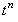
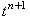
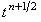
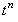
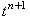
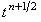

|
Рассмотрим метод разрешения неявной разностной схемы (7.3),
называемый методом дробных шагов. Данный метод позволяет представить неявную разностную схему (7.3)
в виде двух подсхем, каждая из которых может быть решена с помощью метода прогонки.
Разобьём пополам интервал  между точками
 и  на разностной сетке и обозначим полученную
промежуточную точку, как (см. рисунок). между точками
 и  на разностной сетке и обозначим полученную
промежуточную точку, как (см. рисунок).
Запишем на первом полушаге интервала
неявную разностную схему, которая будет учитывать только производную второго порядка по координате x
(назовём её первой подсхемой):
Запишем на втором полушаге интервала
неявную разностную схему, которая будет учитывать только производную второго порядка
по координате y (назовём её второй подсхемой):
Складывая подсхемы (7.7) и (7.8), получаем соотношение,
отличающееся от неявной разностной схемы (7.3) только тем, что вторая производная по координате x
аппроксимируется в нём не на (n + 1)-ом шаге по времени, а на шаге (n + 1/2):
Таким образом, дифференциальное уравнение (7.1) может быть аппроксимировано
с помощью последовательного разрешения двух подсхем (7.7), (7.8), называемых в совокупности
схемой расщепления. Соотношение, являющееся суммой подсхем (7.7), (7.8), показывает, что
схема расщепления имеет такой же порядок аппроксимации, как и неявная разностная схема (7.3):
Отметим, что свободный член уравнения (7.1) может быть учтён
не в первой подсхеме схемы расщепления (7.7), (7.8), а во второй; однако в этом случае он будет иметь вид:
|